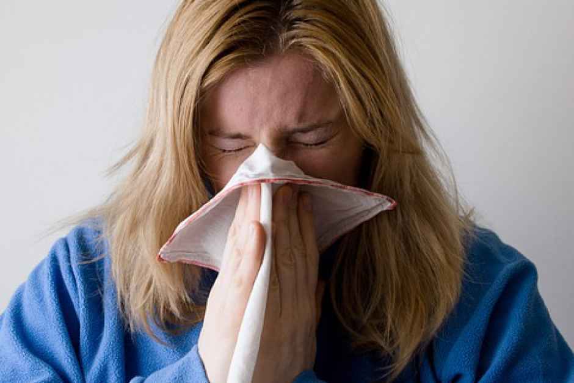
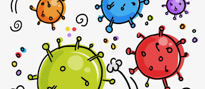

Viruses are parasites, the beings which depend on another living being, often called host, which cannot conduct their life processes without the presence of the host. They are one of the smallest creatures living on planet Earth, by smallest I mean only 250-400 nanonmeters which is about 1/100th the size of a bacteria.Viruses can infect different types of cells: bacteria, plants, and animals. Viruses that target bacteria, called bacteriophages (or phages), are very abundant. Viruses can also infect cultivated plants which can be a matter of worry since epidemics lead to huge crop and economic losses. Viruses, when not treated well and promptly, can even be fatal. Some common viruses are COVID-19, common cold, Chicken pox, Mumps, measles, HIV/AIDS etc.
A virus is made up of a core of genetic material, either DNA or RNA, surrounded by a protective coat called a capsid which is made up of protein. Sometimes the capsid is surrounded by an additional spikey coat called the envelope.There are three different virus types that are made distinct by their shape. The cylindrical helical virus type is associated with the tobacco mosaic virus. Envelope viruses, such as influenza and HIV come covered in a protective lipid envelope. Most animal viruses are classified as icosahedral and are nearly spherical in shape. The viruses within these categories share similar characteristics.
As COVID-19 has swept across the world, we have seen first-hand how a disease outbreak without the tools to halt and treat it can disrupt health systems, economies and threaten vulnerable populations. Recognizing that it would be impossible to address the vast array of potential microbial threats individually, public health policy makers are formulating strategies to evaluate and respond to outbreaks of all kinds. Thus, preparing for future pandemics is essential as prevention is always better that cure.
Some measures that we can take locally to prevent ourselves during any pandemic are:
Some measures that the government should take for prevention during any future pandemic are: